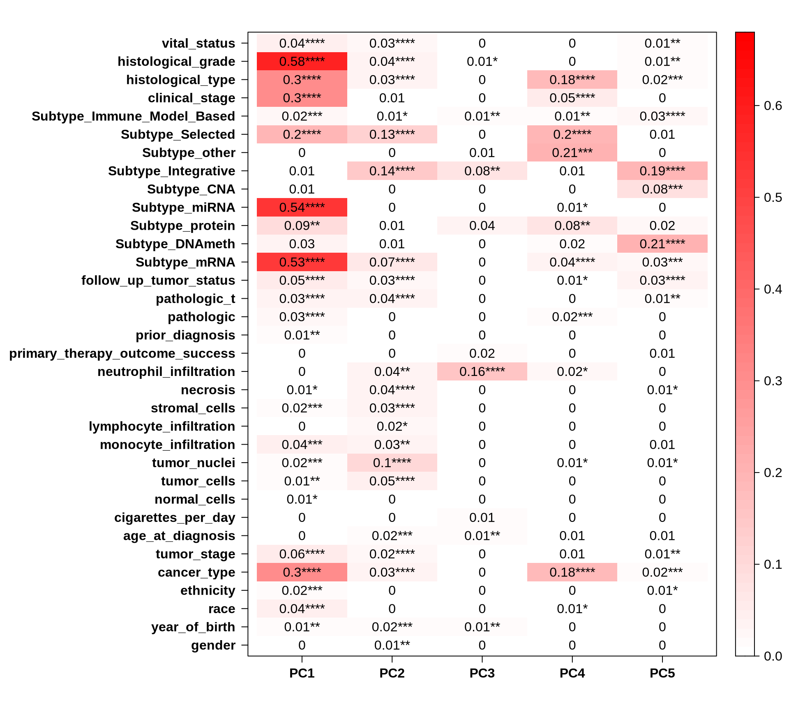
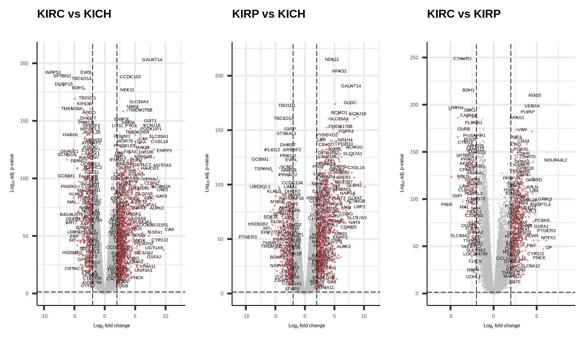
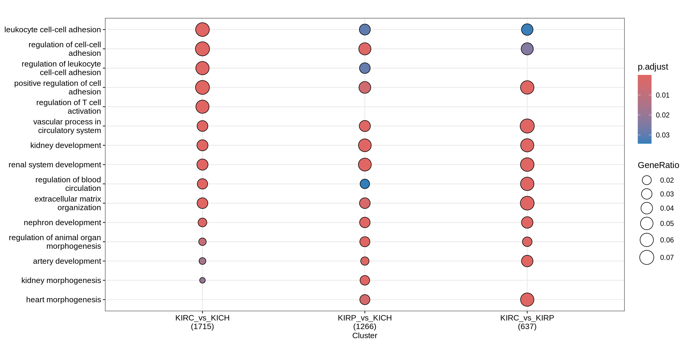
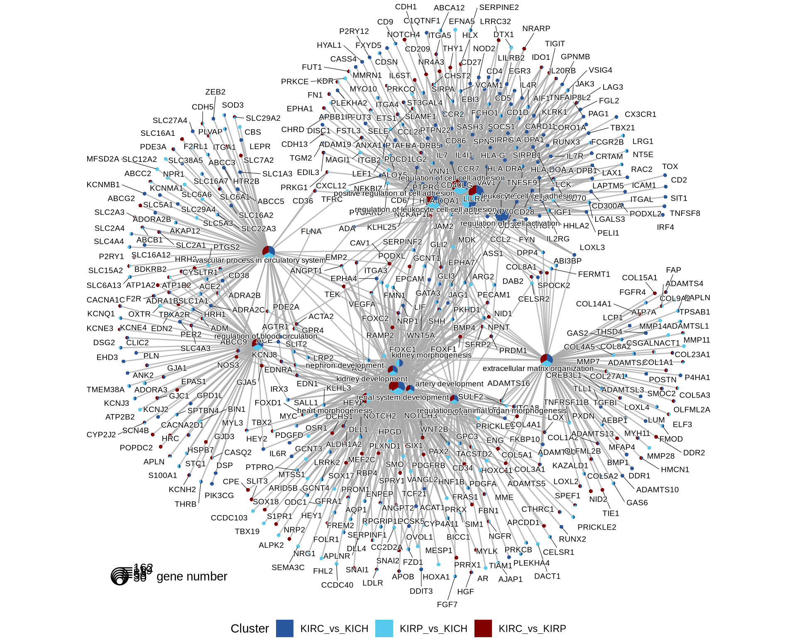
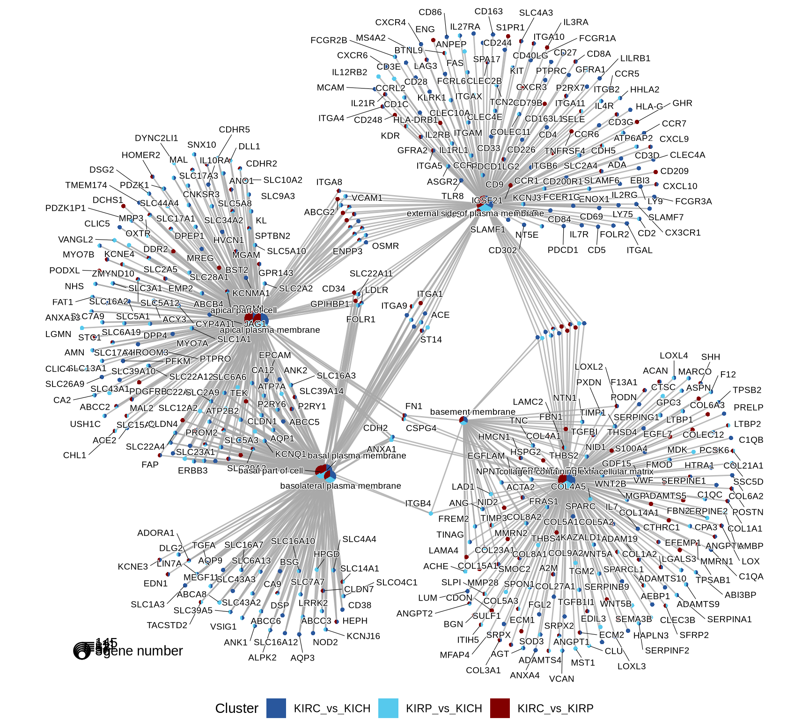
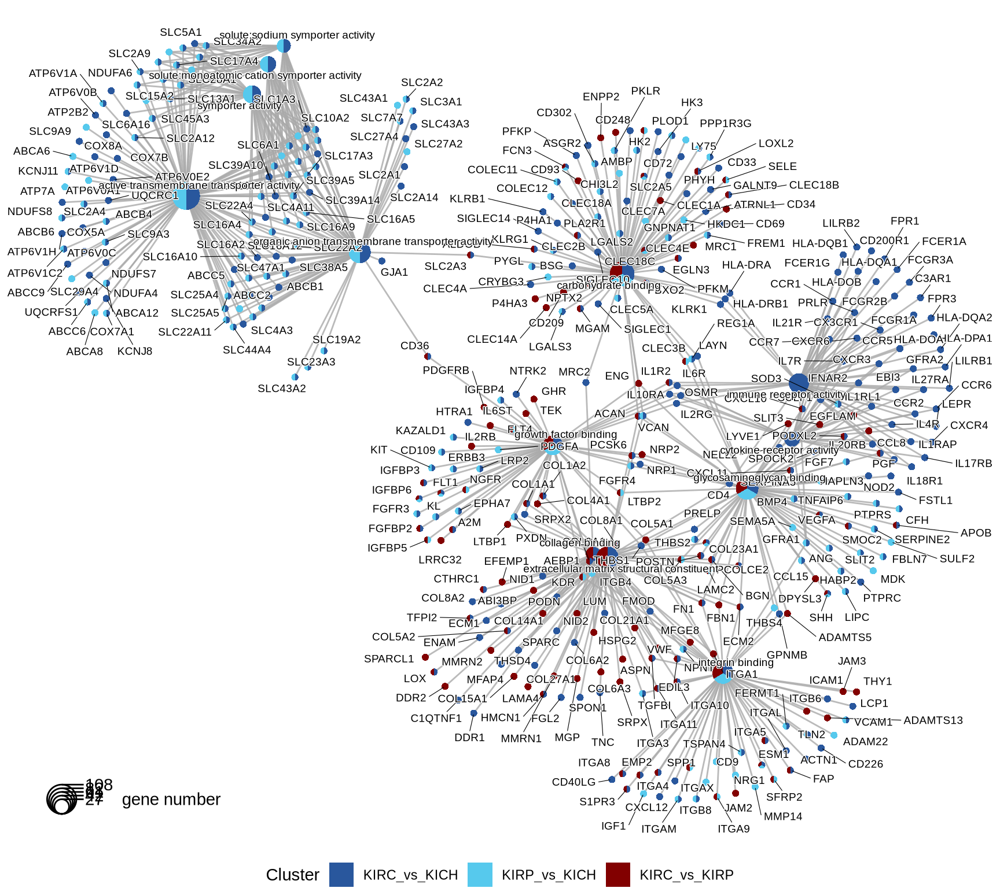
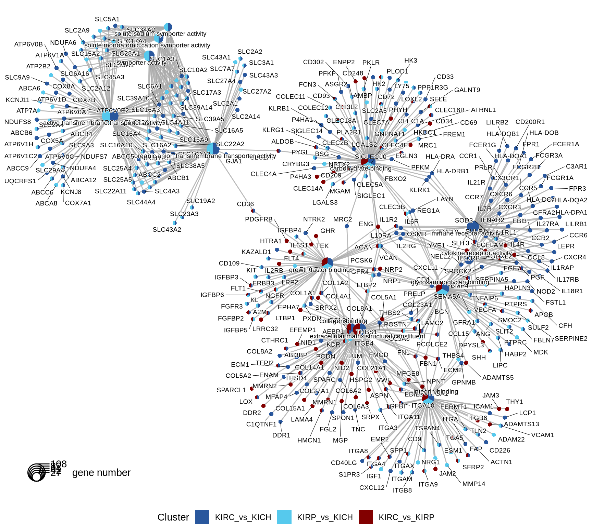

[2 Transcriptomics Analysis]{#sec-transcriptomics-analysis) .quarto-section-identifier}
2.1 Filtering of lowly abundant genes
The first step for transcriptomics analysis is to filter genes that are lowly expressed across all samples because they just inflate the data matrix and they do not contribute to the detection of the biological signal.
The filtering step results in the removal of 6,472 genes. The graph below reports the density curves of gene expressions (logCPM) before and after filtering of lowly expressed genes. Each line represent a sample. Before filtering, all samples showed a left-hand side shoulder, with a peak below 0 logCPM higher than a second peak centered around 5 logCPM. The peak below 0 logCPM represent all the lowly to non-expressed genes. After filtering, only expressed genes are retained.
2.2 Dimesionality Reduction and Dataset Exploration
2.2.1 UMAP on filtered transcriptomics data
After we excluded biopsys from normal tissues and other tumors and we filtered out the lowly expressed genes, the UMAP shows three clusters that are better refined than the ones depicted in Section 1.1.1, and that roughly correspondes with three different kidney cancer subtypes.

2.2.2 Principal Component Analysis (PCA)
The Principal Component Analysis (PCA) is an unsupervised linear dimensionality reduction technique that summarizes large amount of information (as the one in a transcriptomics count table) into a smaller set of summarized variables (Principal Components) that capture the linear relationships between the data. In a transcriptomics dataset, the number of Principal Components equals the number of samples.
The PCA algorithm is run in an iterative manner: the first Principal Component is calculated by finding the line that maximizes the variance between the samples. The second Principal Component is calculated in the same way, with the condition that it is uncorrelated with (i.e., perpendicular to) the first principal component and that it accounts for the next highest variance. The third Principal Component is calculated in the same way, down to the last Principal Component.
To run PCA analyses on transcriptomics data, I recommend the PCAtools package by Kevin Blighe and Aaron Lun.
The first 24 Principal Components capture more than 80% of the variance in the Kidney cancers transcriptomics dataset, with the first two components (PC1 and PC2) capturing a bit more than 25% of the variance.
When we project the samples in the PC1 and PC2, we can see that the PC1 separates KIRC from KICH adn KIRP, which instead cluster together. The second component PC2, instead, seems to partially separate KICH and KIRP samples.
We can also investigate other dimensions Principal Components, to see if there is a component that manages to fully resove the three cancer types. PC4 seems to separates better the KICH from KIRP, while PC1 can discriminate between KIRC and KIRP.

Let’s check the loadings (i.e.: 24 Principal Components capture more than 80% of the variance in the) for the top 4 Principal Components. These indicate which genes are the more responsible to explain the position of the samples along the components, and the direction of this separation.
Looking at the top 1% most variable genes (~ 140 genes), the following 5 genes are the top loadings for the first 4 Principal Components:
Let’s now check the expression of the five top genes identified with the PCA across the cancer types:

Let’s check the Pearson correlation with other clinical covariates.
Certain histological and molecular subtyping correlates perfectly with PC4 (which discriminates KICH) immune infiltrating cells also correlates with PC1 and PC2, and may help to further characterize the subtypes and stratify patients
As we have learnt before (Section 1.2.7), KIRC patients seems to had a worse outcome than KIRP and to have tumors in more advanced stages. PC1 (computed from transcriptomics data) clearly separates KIRC and KIRP samples, and it correlates with tumor histological grade and stage, as well as clinical outcome. This show that we have good correlation between clinical observations and gene expression in Kidney cancers.
sadly, no correlation between the top 5 components and the outcome of therapeutic care.

2.3 Differential gene expression analysis
In addition to cancer type, we saw that age, ethnicity (and race) and age had somewhat a correlation with the cancer types.
We may want to include this covariates in the differential gene expression analysis in order to include their contribution into the model.
based on abs(logFC) >= 2 and p.adj =< 0.05
WITH TREAT ADJ
print(summary(dt)) KIRC_vs_KICH KIRP_vs_KICH KIRC_vs_KIRP Down 331 273 107 NotSig 12772 12991 13553 Up 955 794 398
WITHOUT
print(summary(dt)) KIRC_vs_KICH KIRP_vs_KICH KIRC_vs_KIRP Down 5335 5367 5991 NotSig 1949 2456 1860 Up 6774 6235 6207
2.3.1 Identification of differentially expressed genes


2.3.2 Comparative enrichment analyses across cancer types
ORA vs GSEA:
- Over-Representation Analysis (ORA): It assesses whether the number of genes from a specific pathway in our list of DEGs is greater than expected by chance –> To identify pathways that are significantly over-represented in a given list of DEGs, providing insights into the most affected biological processes by our treatments
- Gene Set Enrichment Analysis (GSEA): It assesses whether the members of a pathway are randomly distributed throughout the ranked list or primarily found at the top or bottom, indicating upregulation or downregulation –> To identify whether specific pathways are upregulated or downregulated across the entire list of genes, providing insight into the global effects of the treatments
prep gene lists
2.3.2.1 GO Biological Process terms



2.3.2.2 GO Cellular Compartments terms



2.3.2.3 GO Molecular Function terms


2.3.2.4 KEGG pathways



2.3.2.5 Reactome pathways


2.4 Infiltrating immune cells
The first step for transcriptomics ana
For this, I will use infiltR, which runs
It includes three common bulk RNA-seq deconvolution tools for quantification of tumor-infiltrating immune cells: CIBERSORT, MCP-counter and quanTIseq. MCP-counter is used to obtain absolute quantification of infiltrating immune cells, while a more detailed profiling of relative immune cells subtypes is performed with CIBERSORT and quanTIseq.

CIBERSORT

Now let’s check the concordance between different estimates
2.4.1 CIBERSORT
Support vector machine
LM 22 signature matrix:
- B.cells.naive
- B.cells.memory
- Plasma.cells
- T.cells.CD8
- T.cells.CD4.naive
- T.cells.CD4.memory.resting
- T.cells.CD4.memory.activated
- T.cells.follicular.helper
- T.cells.regulatory..Tregs.
- T.cells.gamma.delta
- NK.cells.resting
- NK.cells.activated
- Monocytes
- Macrophages.M0
- Macrophages.M1
- Macrophages.M2
- Dendritic.cells.resting
- Dendritic.cells.activated
- Mast.cells.resting
- Mast.cells.activated
- Eosinophils
- Neutrophils
2.4.2 MCP-Counter
it helps more characterize the amount of fibloblast and endothelial cells:
- B lineage
- CD8 T cells
- Cell population
- Cytotoxic lymphocytes
- Endothelial cells
- Fibroblasts
- Monocytic lineage
- Myeloid dendritic cells
- Neutrophils
- NK cells
- T cells
2.4.3 Quantiseq
Quantiseq comes in a handy R package.
Quantiseq is based on (which algorithm)?????
The TIL10 signature can quantify cell fractions for:
- B cells
- Classically-activated (M1) macrophages
- Alternatively-activated (M2) macrophages
- Monocytes
- Neutrophils
- Natural killer (NK) cells
- Non-regulatory (helper) CD4+ T cells
- Cytotoxic CD8+ T cells
- Regulatory CD4+ T (Treg) cells
- Myeloid dendritic cells
- Other uncharacterized cells.
quanTIseq has been extensively validated using real and simulated RNA-seq data, as well as flow cytometry and immunohistochemistry data.
Running quanTIseq deconvolution module
Gene expression normalization and re-annotation (arrays: FALSE)
Removing 17 noisy genes
Removing 15 genes with high expression in tumors
Signature genes found in data set: 110/138 (79.71%)
Mixture deconvolution (method: lsei)
Deconvolution successful!
2.5 Lessons Learnt
[[[[PROPER DESCRIPTION OF FINDINGS AND TRANSCRIPTOMICS ENRICHMENTS]]]]
So far, we have learnt:
- A